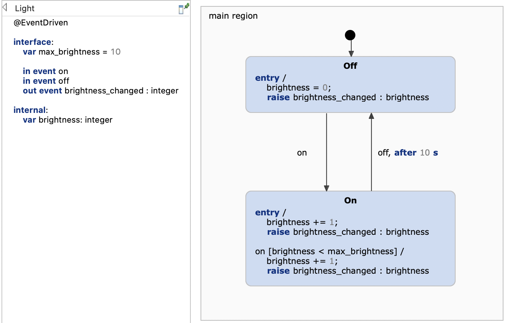
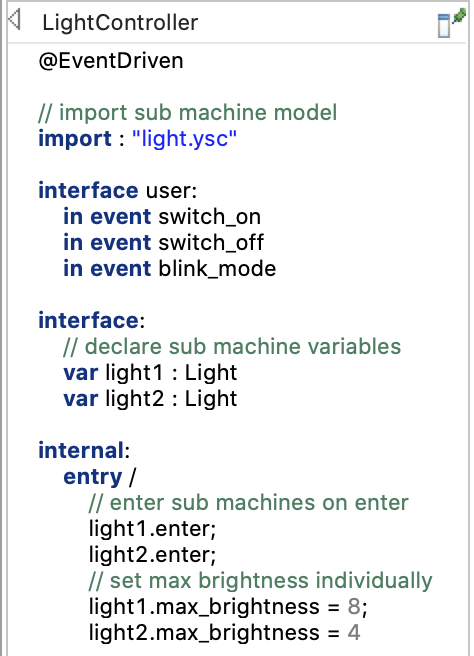
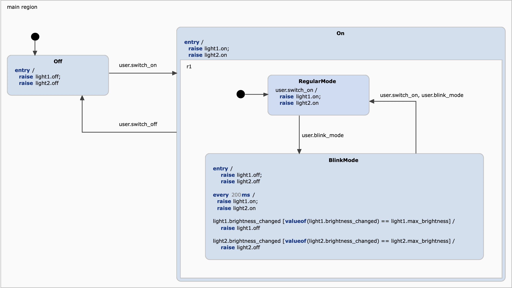
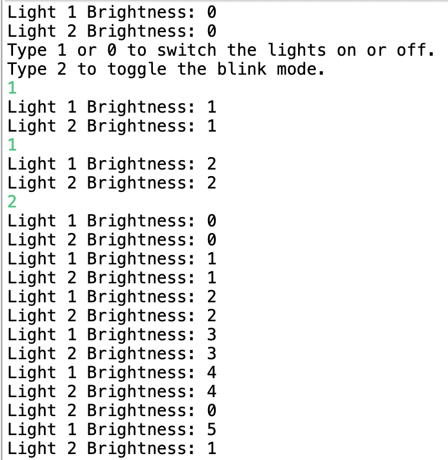

This example demonstrates how to generate C++ code for a multi state machine scenario and how to set everything up in the application code. As example, we will use a light controller that controls two lights. The controller as well as the lights are defined by state machines that communicate with each other by the means of events.
You can find more information on using the multi state machine feature in the online documentation.
The example application consists of two state machines, one for the controller, and one that describes a simple light switch.

The light switch model simply consists of two states, On and Off, and respectively two incoming events on and off. Each time the event on is received, the brightness is increased until a maximum brightness is reached. Whenever the brightness changes, the outgoing event brightness_changed is raised with the new brightness value. Both, the incoming and outgoing events, are used in the controller machine to control two different lights.

Let's first take a look at the definition section. The controller machine declares two variables light1 and light2 of type Light which represents the light state machine above. When the controller machine is entered, also these two light machines are entered. In addition, they get initialized with different maximum brightness values.

The state machine basically describes two modes, a regular one in which the switch_on event is just passed on to both light machines, and a blink mode in which the lights' on events are raised periodically. In this mode, both lights' brightness will be automatically increased until its maximum where it starts from zero again. In order to notice when the maximum brightness of a light is reached, the BlinkMode state reacts to the light machines' brightness_changed events and reads the transmitted value.
The generator model simply defines the configuration for both state machines. As the state machines use time events, we ensure that a timer service implementation is generated with the TimerService parameter.
Code generation is usually invoked each time the statechart model is saved. This behavior can be disabled by unchecking the option Project -> Build Automatically. You can always manually invoke the code generation with Generate Code Artifacts in the context menu of the generator model.
Our application is a simple interactive console with which the user can switch the lights on or off as well as toggle the blink mode. The complete application code is implemented in main.cpp:
The most important parts are commented in the main.cpp file. These are the bullet points:
You can run the application with Run As -> Local C/C++ Application on the main.cpp file. A console should open and ask you for input like in the screenshot below.
